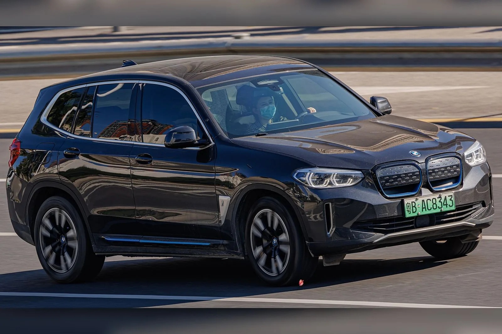
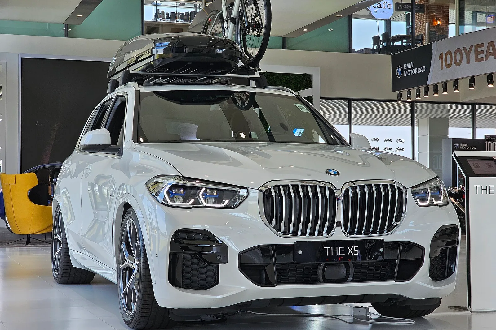
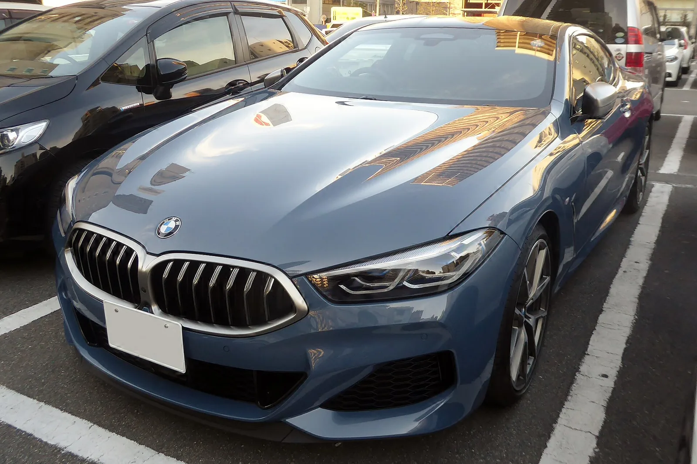

Дизайн-система
Точность · тишина · контраст
Страница подключает настоящий apps/web/src/styles/tokens.css и настоящие
фотографии из apps/api/public/assets. Всё ниже сверстано только на
семантических токенах — как и будущие CSS-модули. Понадобился примитив — значит,
в семантике дырка.
Цвет
Семантика
Компоненты знают только эти имена. Тема меняется их переопределением.
Контраст — проверено, а не на глаз
| Пара | Ratio | Порог | Итог |
|---|---|---|---|
| основной текст на фоне | 17.4 | 4.5 | ✓ |
| второй уровень на поверхности | 8.1 | 4.5 | ✓ |
| третий уровень на светлой поверхности | 5.1 | 4.5 | ✓ |
| тёмный текст на первичной заливке | 17.4 | 4.5 | ✓ |
| белый на акцентной заливке | 4.8 | 4.5 | ✓ |
| граница контрола на поверхности | 3.5 | 3.0 | ✓ |
| кольцо фокуса на фоне | 7.4 | 3.0 | ✓ |
| текст на затемнении поверх белого кузова | 12.6 | 4.5 | ✓ |
Типографика
Inter, один шрифт
Последняя строка — tabular-nums: цены и время в колонках не должны «плясать».
Компоненты
Button
Варианты
Размеры
Состояния
Нажмите Tab — кольцо фокуса рисуется снаружи кнопки. Внутри светлой заливки оно дало бы 2.3:1 и провалило требование.
Field, Input, Checkbox
Badge и StatusBadge
У каждого статуса есть точка и подпись — статус никогда не передаётся одним цветом.
CarCard
Фото во всю карточку, снизу затемнение до поверхности, в нём — название, цена, характеристики и кнопка. Наведите курсор: кнопка раскрывается, фото чуть наезжает.



Два слоя, а не один: снизу вверх поднимается размытие (--photo-blur,
маска гасит его к верху кадра), поверх — затемнение (--photo-scrim).
Контраст держит именно затемнение: размытое белое остаётся белым, и на светлом
кузове один блюр текст бы не вытянул. Плотность 96% посчитана по худшему случаю —
основной текст 14.2:1, подпись капсом 5.0:1.
Карточка вертикальная (3:4) и задаёт размер сама: снимок 3:2 увеличивается по высоте и подрезается по бокам. На демо-фото с парковки это скорее помогает — соседние машины уходят из кадра, — но широкие планы теряют края автомобиля. Под подобранные вертикальные кадры это уйдёт само.
SlotPicker
Свободен · рано (TD-5) · занят (зачёркнут) · выбран. Девять слотов по TD-2,
состояния приходят из slotSchema — правила на фронте не повторяются.
Tabs, Skeleton, Spinner, StatePanel
Загрузка
Пусто и ошибка
Попробуйте изменить фильтры или сбросить их.
Проверьте соединение и попробуйте снова.
Dialog и Toast
BMW X5 xDrive40i, 25 сентября, 14:00. Время освободится для других.
Поведение диалога — фокус-ловушка, Esc, возврат фокуса — Radix Dialog без стилей (D10). Здесь нарисована только оболочка.
Иконки
Набор — Lucide (MIT):
линия 2px, прямые торцы скруглены, сетка 24. Подходит к системе без скруглений,
и в нём есть всё, что нужно нашим экранам. В проекте — пакетом
lucide-react, здесь вшит спрайтом, чтобы витрина работала без сборки.
Толщина линии
Жирная — только в кнопке карточки: там стрелка лежит на светлой заливке и должна читаться как знак, а не как волосок.
Пространство и движение
Отступы, база 4px
Длительности
| Токен | Значение | Что двигает |
|---|---|---|
| duration-1 | 120ms | hover, фокус, нажатие |
| duration-2 | 200ms | раскрытие кнопки, смена вкладки |
| duration-3 | 320ms | диалог, тост, появление содержимого |
При prefers-reduced-motion: reduce все три гасятся до 1ms прямо в токенах —
компоненты не переписываются. Включите настройку в системе и обновите страницу:
карточка перестанет наезжать, скелетон перестанет мерцать.
Витрина, токены и макеты: docs/design-system.md, docs/wireframes.md,
apps/web/src/styles/tokens.css. Учебный проект, не официальный сайт BMW.